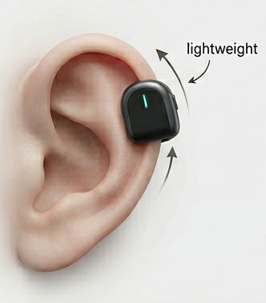
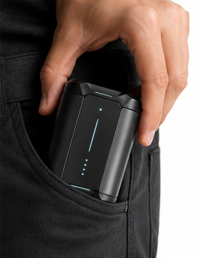
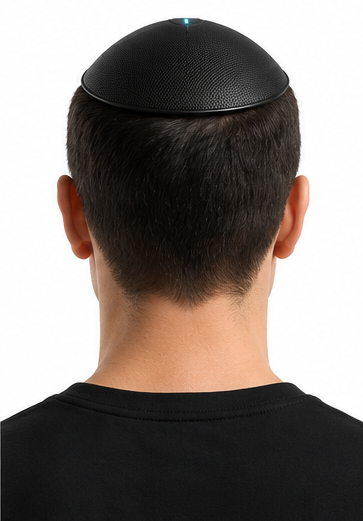
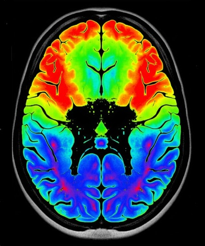
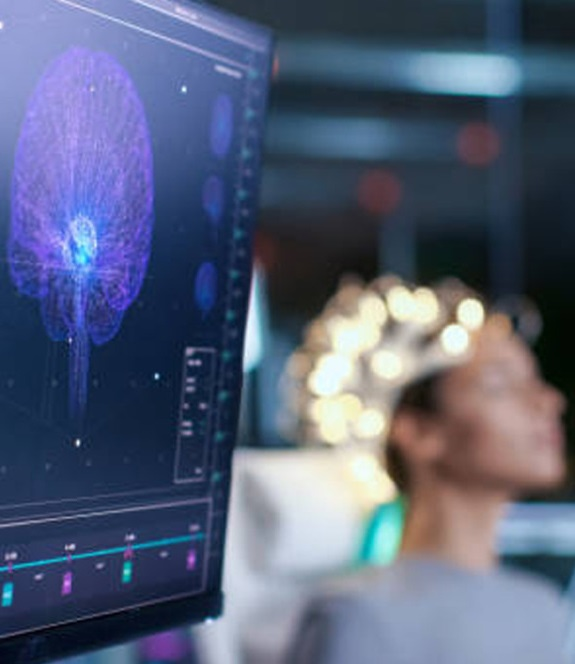

Transformamos tus recuerdos en experiencias inmersivas
Convertimos actividad neuronal en representaciones digitales capaces de reconstruir recuerdos como entornos tridimensionales explorables. No se trata solo de visualizar el pasado, sino de volver a recorrerlo desde la forma en que existe en la mente.
La memoria no es una grabación exacta. Es dinámica, incompleta y profundamente influenciada por la emoción. Nuestro sistema no intenta replicarla de forma literal, sino reconstruirla a partir de las señales cerebrales que se activan cuando un recuerdo es evocado.
El sistema opera mediante modelos de inteligencia artificial especializados que trabajan de forma coordinada durante la recopilación, interpretación y reconstrucción de recuerdos.
Toda la actividad neuronal capturada es enviada a los centros de procesamiento de NeuroVault, donde se generan entornos tridimensionales compatibles con teléfonos, computadores y dispositivos de realidad virtual.
El Modelo Hebb es el núcleo de reconstrucción de memoria de NeuroVault. Su función es interpretar señales neuronales asociadas a recuerdos específicos, identificando patrones relevantes y transformándolos en estructuras espaciales navegables. El modelo prioriza coherencia perceptiva antes que exactitud absoluta, reconstruyendo tanto detalles definidos como vacíos cognitivos presentes en la memoria original.
El Modelo Kahneman supervisa continuamente el estado cognitivo del usuario. Su objetivo es detectar cuándo una persona está evocando activamente un recuerdo, determinando cuándo iniciar y detener la captura neuronal sin intervención manual. Esto permite que el sistema opere de forma contextual y natural.
El sistema NeuroVault funciona mediante el Mnemo Kit, un conjunto portátil compuesto por dos Mnemo Nodes y una unidad central denominada Vault Core.

Dispositivos neuronales no invasivos colocados detrás de las orejas. Capturan actividad cerebral y transmiten la información al Vault Core.

Unidad portátil que actúa simultáneamente como estación de almacenamiento, procesador contextual y estuche de carga para los dispositivos. Toda la información recopilada se almacena localmente en esta unidad hasta ser enviada a los centros de procesamiento de NeuroVault cuando exista conexión disponible.

El Mnemo Kit incorpora también el Synaptic Veil, una membrana superficial de contacto diseñada para colocarse sobre la zona superior de la cabeza. Su función es complementar la captura realizada por los Mnemo Nodes, aumentando la estabilidad y precisión de señal durante reconstrucciones complejas, extensas o emocionalmente intensas.
El Mnemo Kit está diseñado para ser ligero, resistente al agua y utilizable durante actividades cotidianas. Si alguno de los Mnemo Nodes se aleja más de un metro del Vault Core, el sistema activa alertas de proximidad para evitar desconexiones o pérdida de información.
Todos los recuerdos procesados utilizan un formato propietario exclusivo de NeuroVault. Las experiencias generadas son encriptadas y solo pueden ejecutarse mediante el software oficial de la plataforma. Debido a la naturaleza sensible de la información neuronal, NeuroVault controla completamente el flujo, almacenamiento y validación de los datos.
Los usuarios pueden cancelar su suscripción en cualquier momento. Al finalizar el servicio, NeuroVault entrega un dispositivo de almacenamiento cifrado que contiene todas las experiencias procesadas hasta la fecha. Estas experiencias continúan siendo accesibles mediante el software oficial de NeuroVault, pero dejan de almacenarse en la nube de la plataforma. Por motivos de seguridad y privacidad, el dispositivo entregado constituye la única copia restante de los recuerdos procesados.
$9.99
$19.99
$29.99
Explora las capacidades de cada nivel de NeuroVault.
NeuroVault está evolucionando más allá de la reconstrucción de recuerdos conscientes. Actualmente se desarrollan sistemas orientados a estados mentales más complejos, como el sueño y la actividad cognitiva no consciente.

Extensión experimental del Modelo Hebb enfocada en la reconstrucción de actividad onírica, basada en el marco teórico del sueño y la consolidación de memoria propuesto por Walker. En lugar de interpretar recuerdos, analiza patrones cerebrales asociados a sueños, generando representaciones basadas en coherencia simbólica y emocional. No busca precisión factual, sino estructura interna del sueño: imágenes, sensaciones y narrativas emergentes durante el descanso.
No busca precisión factual, sino estructura interna del sueño: imágenes, sensaciones y narrativas emergentes durante el descanso.
Evolución del sistema de monitoreo cognitivo capaz de distinguir entre recuerdo consciente, actividad mental espontánea y sueño.
Permite identificar cuándo una persona está soñando además de cuándo está recordando, activando automáticamente los módulos adecuados de captura neuronal.

Si deseas información sobre NeuroVault, acceso al sistema o colaboración en investigación, puedes contactarnos a través de los canales oficiales de la plataforma.
contacto@neurovault.ai
research@neurovault.ai
security@neurovault.ai
Todas las solicitudes son procesadas bajo protocolos de seguridad y privacidad de datos neuronales.